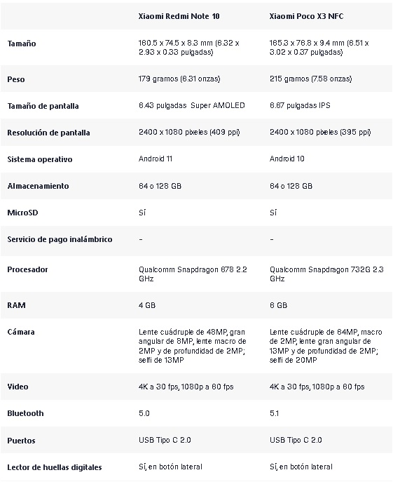
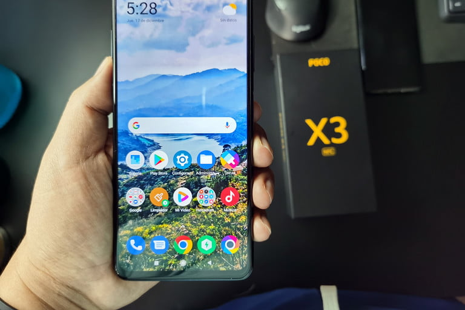

Xiaomi se ha convertido en una de las marcas de celulares económicos más exitosas del mercado, y hay una buena razón para ello móviles como el Xiaomi Redmi Note 10 y el Poco X3, dos de sus superventas de la gama media, ofrecen grandes características a precios bastante bajos. Sí, es cierto que el Poco X3 es un móvil de 2020 y el Redmi Note 10 es de 2021, pero es posible que si estás por comprar un smartphone de gama media te estés preguntando cuál es mejor.
móviles como el Xiaomi Redmi Note 10 y el Poco X3, dos de sus superventas de la gama media, ofrecen grandes características a precios bastante bajos. Sí, es cierto que el Poco X3 es un móvil de 2020 y el Redmi Note 10 es de 2021, pero es posible que si estás por comprar un smartphone de gama media te estés preguntando cuál es mejor. Queremos ayudarte y por eso te ofrecemos esta comparativa entre el Xiaomi Redmi Note 10 vs Poco X3.

El diseño del Xiaomi Redmi Note 10 y el Xiaomi Poco X3 es bastante similar. Su tamaño es parecido, aunque el Poco X3 es ligeramente más grande. A nuestro juicio el diseño del Redmi Note 10 es más agradable a la vista, pues en general es más limpio. Ambos celulares están hechos de plástico y tienen acabado «de vidrio», lo que los hace un imán de huellas, lo que nos parece resta un poco de atractivo visual, aunque puede sortearse usando un protector o case.
Donde sí hay una diferencia notable es en la calidad de la pantalla, y es que la del Redmi Note 10 es Super AMOLED, lo que se traduce en colores más vibrantes y la posibilidad de un always on display, que básicamente es que la pantalla muestre notificaciones aún cuando el teléfono esté en reposo. En contraparte, la pantalla del Poco X3 es IPS, un panel de menor calidad de color y brillo respecto de una Super AMOLED. Eso sí, el Poco X3 tiene una frecuencia de actualización de 120 Hz, útil para videojuegos, mientras que la del Redmi Note 10 actualiza a 60 Hz.

También, toma en cuenta que el Poco X3 es un teléfono sustancialmente más pesado, así que si planeas jugar videojuegos, probablemente notes antes los 215 gramos de peso que la frecuencia de actualización de 120 Hz.
Sobre la durabilidad, que ambos celulares estén hechos de plástico suma un poco a esta. También, ambos tienen Gorilla Glass, aunque en el caso del Redmi Note 10 es Gorilla Glass 3, mientras que en el Poco X3 es Gorilla Glass 5; es decir, la pantalla del Poco X3 es más resistente a caídas. Asimismo, ambos cuentan con certificación IP53, lo que los vuelve resistente a salpicaduras si bien carecen de protección en caso de que los sumerjas.
Ganador: Redmi Note 10
Basamos nuestro veredicto en que, a menos que seas alguien con manos de mantequilla, pasarás más tiempo viendo la pantalla de tu teléfono que recogiéndolo del suelo, así que consideramos una mejor característica el panel Super AMOLED que la protección extra Gorilla Glass 5.